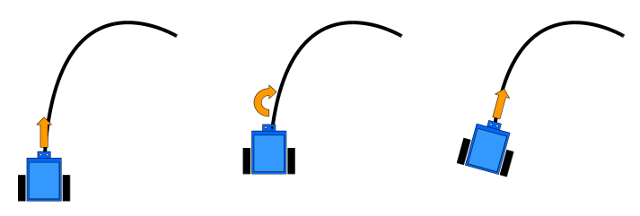

risorse | studio del firmware di mbot
Una volta assemblato, mBot può essere subito utilizzato secondo tre modalità: telecomandato (modo A), scansa-ostacoli (modo B) e inseguimento della linea (modo C). Lo sketch del firmware è scaricabile dal sito ufficiale (qui una copia locale del sorgente a maggio 2017). È possibile realizzare le tre funzionalità utilizzando la programmazione a blocchi di mBlock?
Prima di cominciare, un paio di premesse.
Se mBot è stato montato correttamente, nell'ambiente mBlock M1 rappresenta il motore di sinistra, M2 quello di destra. Quando si assegna un valore di velocità positivo ad un motore, questo gira in modo da far avanzare il robot – M1 in senso orario, M2 in senso antiorario –, viceversa per valori di velocità negativi.
Nel firmware originale le curve in avanti vengono effettuate riducendo la velocità di rotazione della ruota interna a un quinto della velocità nominale, quelle in retromarcia a un ottavo:
[file mbot_factory_firmware.ino]
...
void Forward()
{
MotorL.run(-moveSpeed);
MotorR.run(moveSpeed);
}
void Backward()
{
MotorL.run(moveSpeed);
MotorR.run(-moveSpeed);
}
void TurnLeft()
{
MotorL.run(-moveSpeed/5);
MotorR.run(moveSpeed);
}
void TurnRight()
{
MotorL.run(-moveSpeed);
MotorR.run(moveSpeed/5);
}
void BackwardAndTurnLeft()
{
MotorL.run(moveSpeed/8 );
MotorR.run(-moveSpeed);
}
void BackwardAndTurnRight()
{
MotorL.run(moveSpeed);
MotorR.run(-moveSpeed/8);
}
void Stop()
{
rgb.setColor(0,0,0);
rgb.show();
MotorL.run(0);
MotorR.run(0);
}
Le routine di controllo del movimento del robot
Notare come nella programmazione a basso livello si debba tener conto del fatto che i due motori sono contrapposti: per esempio per far avanzare il robot è necessario far girare il motore di sinistra, MotorL, in senso orario – impostando un valore di velocità negativo – mentre quello di destra, MotorR, in senso antiorario – specificando un valore di velocità positivo. mBlock ci risparmia questa complicazione!
La modalità di funzionamento di guida manuale è realizzata dalle due procedure get_ir_command e modeA: la prima si occupa di stabilire velocità e direzione del robot sulla base dei tasti che l'utente ha premuto sul telecomando, la seconda di attivare i motori.
Interessante la logica di arresto del robot: si ferma automaticamente quando sono trascorsi più di 120ms dall'ultima pressione di un tasto. Non è troppo complicato implementare lo stesso criterio con i blocchi: sarebbe sufficiente azzerare il timer di cui è dotato mBot ogniqualvolta si registra la pressione di un tasto del telecomando e introdurre una variabile che indica se il robot è in movimento oppure è fermo; il robot andrebbe fermato se risulta in movimento e il valore del timer è superiore a 0,12s:
Una possibile implementazione dell'arresto temporizzato
La semplice soluzione di arrestare il robot non appena si riscontra che nessuno dei tasti direzionali del telecomando è premuto è tuttavia più intuitiva e l'effetto finale praticamente indistinguibile:
imposta [velocità] a [150]
per sempre
se <tasto avanti premuto> allora
imposta (M1) a (velocità)
imposta (M2) a (velocità)
accendi led (entrambi) sul (verde)
altrimenti
se <tasto destra premuto> allora
imposta (M1) a (velocità)
imposta (M2) a (velocità / 5)
spegni led (sinistro)
accendi led (destro) sul (giallo)
altrimenti
se <tasto indietro premuto> allora
imposta (M1) a (-velocità)
imposta (M2) a (-velocità)
accendi led (entrambi) sul (rosso)
altrimenti
se <tasto sinistra premuto> allora
imposta (M1) a (velocità / 5)
imposta (M2) a (velocità)
accendi led (sinistro) sul (giallo)
spegni led (destro)
altrimenti
imposta (M1) a (0)
imposta (M2) a (0)
spegni led (entrambi)
...
Il codice prosegue con 9 blocchi se/allora associati ai tasti 1÷9 del telecomando per il controllo della velocità. Ricordando che la massima velocità consentita è 255 e tenendo conto che se le batterie non sono perfettamente cariche un valore inferiore a 50~60 potrebbe non essere sufficiente per far muovere il robot, assegnamo il valore 50 alla prima velocità e proseguiamo per incrementi di 25 fino ad arrivare a 250 per la velocità 9 (il firmware originale parte da 71 e procede a passi 23 per giungere a 255). Un breve suono conferma l'avvenuto cambio di velocità:
...
se <tasto 1 premuto> allora
imposta [velocità] a [50]
suona la nota (C4) durata (minima)
se <tasto 2 premuto> allora
imposta [velocità] a [75]
suona la nota (D4) durata (minima)
se <tasto 3 premuto> allora
imposta [velocità] a [100]
suona la nota (E4) durata (minima)
...
se <tasto 9 premuto> allora
imposta [velocità] a [250]
suona la nota (D5) durata (minima)
Il progetto in mBlock si presenta all'incirca così (per brevità sono stati omessi blocchi relativi ai cambi di velocità associati ai tasti R3, R4, ... R8):
Il progetto della guida manuale telecomandata è scaricabile qui.
La seconda modalità di funzionamento, realizzata dalla procedura modeB, prevede che il robot si muova autonomamente sul pavimento lungo traiettorie rettilinee cambiando direzione quando è in prossimità di un ostacolo. A tal scopo sfrutta il sensore ultrasonico di cui è dotato, grazie al quale è in grado di rilevare la distanza dell'oggetto più prossimo.
Si possono verificare tre situazioni:
In pseudo codice:
imposta la velocità del robot
per sempre
distanza = distanza misurata dal sensore ultrasonico
se <distanza > 40> allora
prosegui dritto
altrimenti
se <distanza > 15> allora
effettua una breve svolta a sinistra o destra
altrimenti
effettua una lunga sterzata in retromarcia verso sinistra o destra
La pratica mi ha insegnato che è bene fare in modo che inizialmente il robot stia fermo: ho rischiato più volte di vederlo cadere dal tavolo al termine del trasferimento del programma – il robot inizia ad eseguire i programmi che gli vengono inviati non appena ricevuti, senza attendere alcunché. Ho quindi aggiunto un'istruzione che avvia il robot solo in seguito alla pressione del pulsante presente sulla sua scheda:
Il programma scansa-ostacoli completo
Si riconoscono i parametri caratteristici delle svolte in avanti e in retromarcia precedentemente discussi (velocità della ruota interna ridotta rispettivamente a 1/5 e 1/8 rispetto a quella esterna). Le durate effettive delle svolte brevi e di quelle lunghe (300 e 800 millisecondi rispettivamente) sono state ricavate direttamente dal codice sorgente dello sketch originale. La pausa finale garantisce il corretto funzionamento del sensore ultrasonico che non può essere interrogato troppo frequentemente (cfr. sezione “Uso del sensore” in Uso del sensore ultrasonico HY-SRF05 con mBlock).
Il progetto scansa-ostacoli è scaricabile qui.
La terza modalità di funzionamento prevede che il robot proceda seguendo il tracciato di una linea nera su fondo bianco. Ciò è possibile grazie alla presenza di due sensori a raggi infrarossi posti sul lato inferiore della parte frontale di mBot. In mBlock la lettura dello stato dei sensori avviene per mezzo del blocco line follower, che ritorna un valore intero compreso tra 0 e 3 in funzione del colore presente al di sotto di essi (S1 è il sensore di sinistra, S2 quello di destra):
| S1 | S2 | Valore |
| Nero | Nero | 0 |
| Nero | Bianco | 1 |
| Bianco | Nero | 2 |
| Bianco | Bianco | 3 |
La procedura di inseguimento della linea è implementata dalla funzione modeC, ed è per certi versi sorprendente. Mi sarei aspettato qualcosa di simile a:
per sempre
se entrambi i sensori sono sulla linea allora
procedi dritto
altrimenti se solo il sensore di sinistra è sulla linea allora
gira a sinistra
altrimenti se solo il sensore di destra è sulla linea allora
gira a destra
altrimenti
fai retromarcia
In sostanza il robot prosegue dritto finché si trova sulla linea guida, curvando non appena uno dei due sensori finisce fuori dalla linea stessa; la svolta viene effettuata verso il sensore che si trova ancora sulla linea:

Il funzionamento immaginato dell'inseguitore di linea
Segue una possibile realizzazione della versione “naif” dell'inseguitore:

Il programma dell'inseguitore semplificato
Il programma originale segue invece una logica diversa: la svolta correttiva viene rimandata al momento in cui anche il secondo sensore finisce fuori dalla linea, curvando nella direzione del sensore che per ultimo è uscito dalla linea. Il programma tiene traccia della storia recente dei valori registrati dai sensori per mezzo di una variabile numerica (denominata Flag nel codice sorgente originale) che può assumere un qualunque valore compreso tra 0 e 20. Posta a 10 quando entrambi i sensori sono sulla linea, viene decrementata quando il sensore destro esce dalla linea, incrementata quando esce quello sinistro. Nell'istante in cui entrambi i sensori escono dalla linea, il programma consulta il valore della variabile e comanda una svolta a sinistra se il valore è inferiore a 10, a destra se maggiore. In pseudo codice:
direzione = 0
per sempre
se entrambi i sensori sono sulla linea allora
prosegui dritto
direzione = 10
altrimenti se solo il sensore sinistro è sulla linea allora
prosegui dritto
se direzione > 0 allora decrementa direzione
altrimenti se solo il sensore destro è sulla linea allora
prosegui dritto
se direzione < 20 allora incrementa direzione
altrimenti se entrambi i sensori sono fuori dalla linea allora
se direzione < 10 allora
svolta a sinistra
altrimenti se direzione < 10 allora
svolta a sinistra
altrimenti
fai marcia indietro
Il valore iniziale della variabile direzione è direttamente mutuato dallo sketch originale, ed è tale per cui se all'inizio il robot non è sulla linea guida questi effettuerà una svolta verso sinistra nella speranza di incontrarla prima o poi.
Il funzionamento dell'inseguitore di linea originale
Inizialmente il robot si trova sulla linea guida, e la direzione è posta a 10; quando il sensore di sinistra esce dalla linea, il robot prosegue dritto ma il valore della direzione comincia ad aumentare; quando anche il sensore di destra esce dalla linea inizia la manovra correttiva, che in questo caso consiste in una svolta verso destra, essendo il valore della direzione maggiore di 10; quando entrambi i sensori rientrano sulla linea, il valore della direzione viene riportato a 10.

Un'implementazione dell'inseguitore originale
Qual'è la strategia migliore, ammesso ce ne sia una? Entrambe sono state messe alla prova sul circuito che si trova nella confezione di mBot.
L'inseguitore semplificato
L'inseguitore originale
Dai filmati si può notare come nella versione semplificata i due sensori non finiscono quasi mai contemporaneamente fuori dalla linea guida (raramente li si vede simultaneamente accesi), a differenza di quanto accade quando è in funzione il programma originale. Sul circuito di prova le due strategie si dimostrano ugualmente efficienti, consentendo entrambe di completare un giro in 13 secondi circa.
È lecito presupporre che non ce ne sia una vincente sull'altra, e che invece una possa prevalere sull'altra su certi tipi di tracciati ed essere invece surclassata su altri. È possibile immaginare un circuito che metta in risalto le caratteristiche dell'inseguitore semplificato e al contempo penalizzi quello originale? Esiste un circuito che ribalta la situazione?
Il progetto dell'inseguitore della linea è scaricabile qui (quello semplificato qui).
Aggiornamento [08/05/2018]
Entrambi gli inseguitori qui analizzati necessitano di una linea guida larga almeno quanto la distanza che separa i due ricettori del sensore di linea. Potrebbe valer la pena spendere del tempo per realizzare un inseguitore di linea “sottile”, in cui il robot deve mantiene la linea guida tra i sensori. Si potrà sperimentare quanto sia cruciale la scelta della larghezza della linea (non troppo sottile da non essere percepita ma non troppo larga da essere rilevata da entrambi i sensori) nonché la velocità che, se troppo elevata, può causare lo scavalcamento e la conseguente perdita della linea.
La strategia di inseguimento di una linea sottile
La tecnica di inseguimento di una linea sottile segue il principio opposto a quello della linea spessa: se il ricettore di destra finisce sulla linea allora il robot deve sterzare verso destra, per mantenere la linea tra i due sensori (cfr. figura); analogamente se a finire sulla linea è il ricettore di sinistra.
Il progetto di un inseguitore di linea sottile è scaricabile qui.
Pagina modificata il 29/03/2018